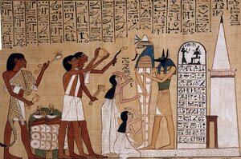

(verb)
tr: dress, prepare corpse for burial, bury [θαπτειν]
qual: S,B
qual: S,B

1: dress, prepare corpse for burial, 2: bury
complete
| ― SB | (noun male/female)f once
B, burial, funeral [ταφη, ενταφιασμος] S, corpse [νεκρος]565 |
Crum: 120b | |||||||
| ⲃⲁⲗⲃⲗ ⲕ. S | dig up corpses566 | ||||||||
| ⲣⲉϥⲛ ⲕ. ⲉϩⲟⲩⲛ S | invoker, producer of dead [εγγαστριμυθος, μαγγανευτρια]567 | ||||||||
| ⲣ ⲕ. SF | be corpse, be dead568 | ||||||||
| ⲣⲉϥⲕ. B | embalmer [ενταφιαστης]569 | ||||||||
| ϫⲓⲛⲕ. B | (noun male/female)burial570 | Crum: 121a | |||||||
| ⲕⲁⲓⲥⲉ, ⲕⲉⲓⲥⲉ, ⲕⲉⲥⲉ S
ⲕⲉⲉⲥⲉ AL ⲕⲁⲓⲥⲓ B ⲕⲏⲓⲥⲓ, ⲕⲉⲏⲥⲓ F ⲕⲁⲏⲥⲉ O |
(noun female)preparation for burial, embalming
grave-clothes, shroud corpse571 |
||||||||
| ⲥⲙⲟⲧ ⲛⲧⲕ. | effigy, imitation of body572 | ||||||||
See also:
| view | ⲧⲱⲙⲥ S ⲑⲱⲙⲥ, ⲑⲟⲙⲥ B ⲧ(ⲉ)ⲙⲥ- S ⲑⲉⲙⲥ- B ⲧⲟⲙⲥ⸗, ⲧⲟⲙⲉⲥ⸗ S ⲧⲁⲙⲥ⸗ SfAF ⲑⲟⲙⲥ⸗ B ⲧⲁⲙⲉⲥ⸗ F ⲧⲟⲙⲥ† S ⲧⲁⲙⲥ† Sf ⲑⲟⲙⲥ† B ⲧⲁⲙⲉⲥ† F | (verb) tr: bury [θαπτειν, κατορυσσειν]391 |
| view | ϣⲟⲗϩⲥ B | (noun female) corpse [θηρα, τεθνεως, πτωμα]1914 |